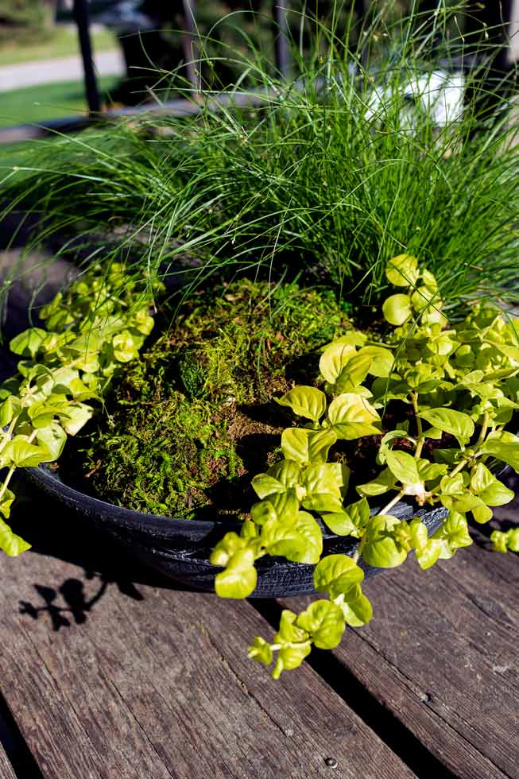
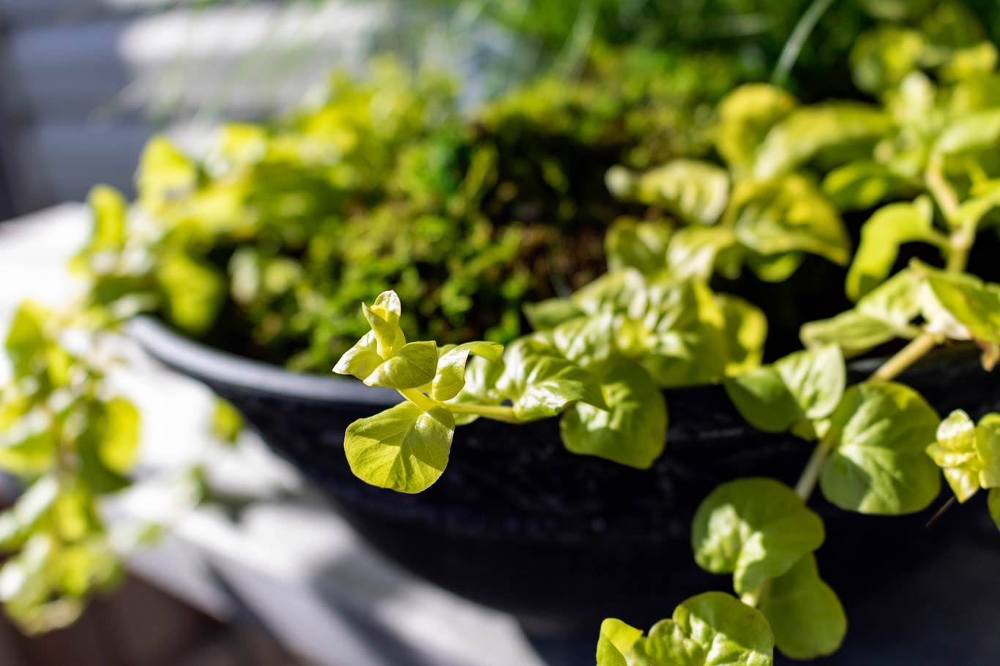

Unconventional
Materials
Mary Reynolds is a landscape designer who creates gardens highlighting the existing features of the land. She plans out where the plants will go according to how they grow while never weeding or breaking up the soil. Additionally, Mary makes speeches and publishes books urging others to protect what little of the wild we have left.
A clay mold of her face covered in moss comes up from the soil surrounded by a few live plants in a textured bowl modeled after some of Mary Reynold’s garden designs. This piece represents Mother Earth in the likeness of Mary and the plants’ reliability on her to grow and therefore is called “Mother Mary”.
This is a living, on-going project.

